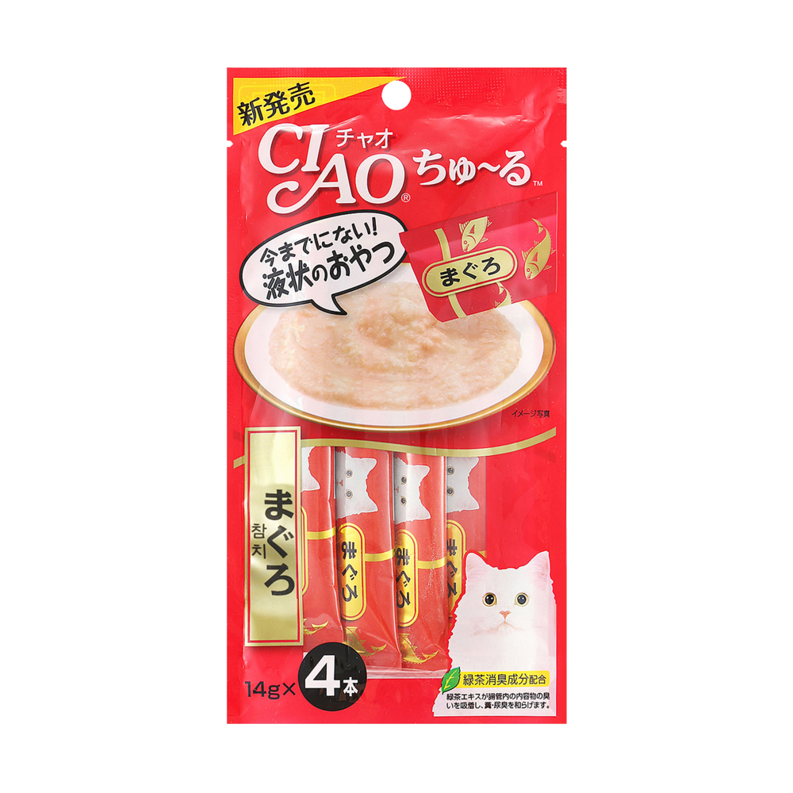

Home
간식 종류
장난감
루시
계정
유튜브
인스타
츄르

일본에서 제조하는 고양이 액상 간식이지만
보통 국내에서는 형태는 동일하지만 챠오츄르가 아닌 제품까지도 츄르라고 부른다.
대부분의 고양이가 제일 좋아하는 간식!
스낵형 간식
일반 건사료처럼 생겼지만 다양한 맛의 간식
이빨 관리용으로도 많다.
동결건조
원재료에서 수분을 제거하여 바삭한 형태의 간식
물에 불려서 급여하면 음수량에 도움을 줄 수 있다.
뿌셔서 사료위에 뿌려주어도 굿굿
캔
물을 좀 더 넣어주면 음수량에 도움을 준다.
사료와 함께 줘도 좋음
간식캔이 아닌 주식캔도 있어 주의!!
캣닢
보통 침을 줄줄 흘리거나, 헤롱헤롱대는 등 기분 좋게 취한 듯한 모습을 보임
이는 캣닢에 들어있는 '네페탈락톤(Nepetalactone)'이라는 성분으로
고양이의 건강에는 해로운 영향을 주지 않음
수제간식
방부제나 인공 감미료와 같은 첨가물 없이 안심하고 먹일 수 있음
판매하는 것의 경우 수작업이라 가격대가 높다.